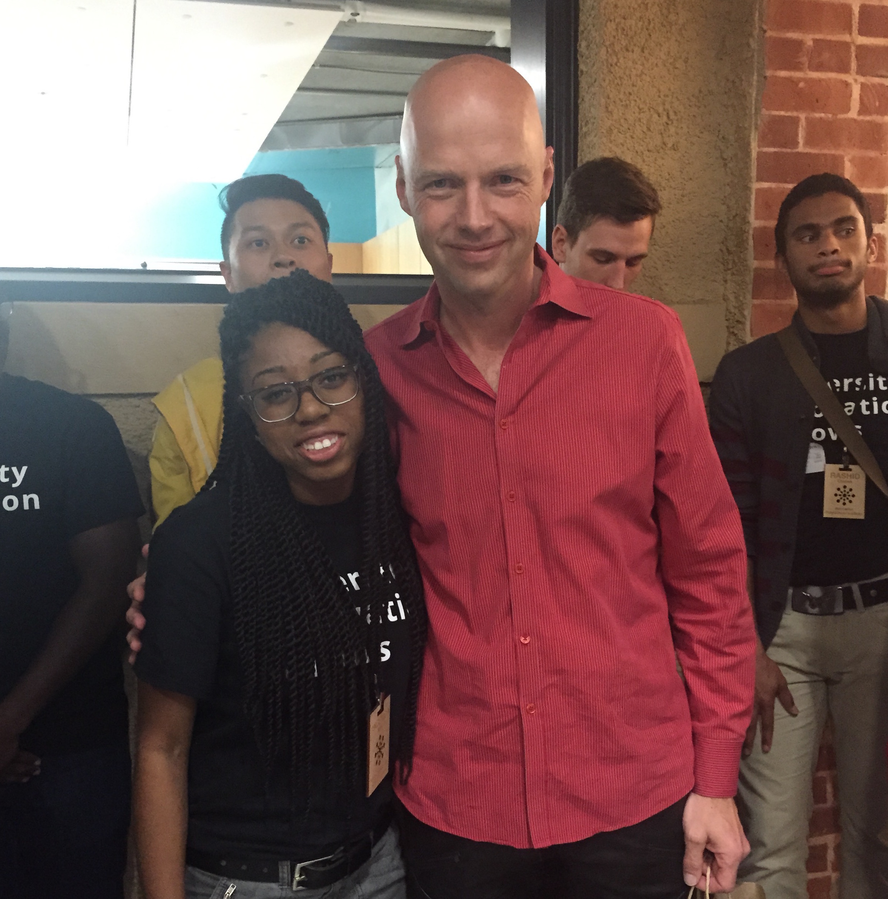
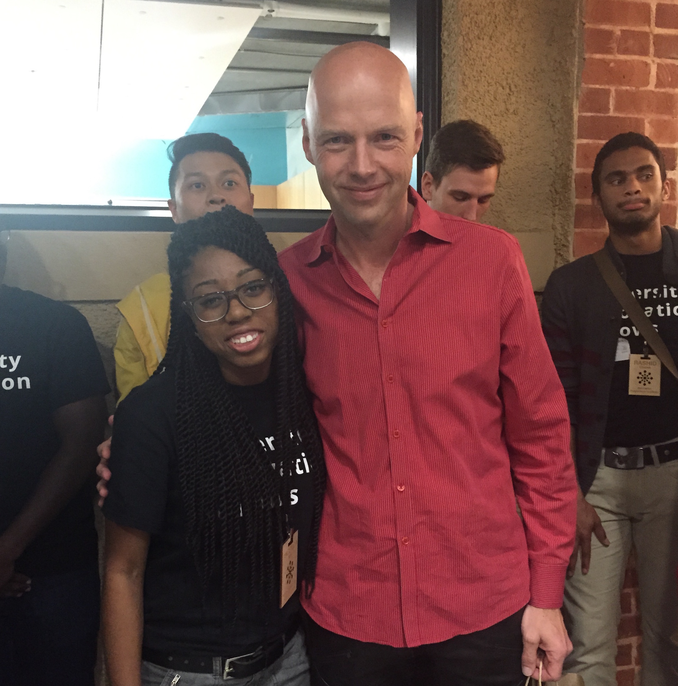

Bio
Angelica Willis is a computer science undergraduate student at North Carolina Agricultural and Technical State University (NC A&T) with a passion for academic excellence and using software engineering to advance humanity. Angelica is a White House Champion of Change for Computer Science Education, a 2015-2016 Student Ambassador to the White House through the White House HBCU All-Stars program, a 2016 CODE2040 Fellow, a 2016 Apple HBCU Scholar and the first NC A&T student to become a Stanford University Epicenter's University Innovation Fellow, in addition to maintaining a 4.0 GPA. Angelica conducts research in behavioral biometric authentication and computer mediated problem solving, and has interned with NASA where she worked on ecological forecasting research with space satellites to support reforestation in Rwanda. Angelica is spearheading an award-winning initiative to develop an entrepreneurship, design thinking and computer science centered Makerspace for at-risk youth, underrepresented communities and NC A&T students in eastern Greensboro, NC.
When Angelica graduates, she would like to become a Software Engineer who contributes to ambitious, exploratory and ground-breaking projects that will positively and dramatically affect the technological advancement of mankind. She would also like to continue mentoring the next generation of innovators.
Favorite Quote: "If I had asked people what they wanted, they would have said faster horses." Henry Ford
 


Student
Education North Carolina A&T State University (Current GPA: 4.00) Major: Computer Science | Classification: Senior | Expected Graduation Date: May, 2017 Research
-
Behavioral Biometric Authentication:
- Worked on Active Authentication and Behavioral Biometric Authentication research (Java) within an Agile project environment
- Developed data science solutions for large biometric data sets with several thousand data points each
- Researched implemented the use of Genetic Algorithms to optimize Behavioral Biometric algorithms to reduce space complexity by 95% Computer-Mediated Problem Solving:
- Developed Machine Learning software (Java) for education based computer mediated problem solving
- Created Natural Language Processing feature extractors for the machine learning system Conducted statistical analysis for experiment results
-
Behavioral Biometric Authentication:
- Robert Stokes, Angelica Willis, Kelvin Bryant, Zanetta Tyler, Anthony Dobson. Comparison of Biometric Authentication Software Techniques: GEFE vs. Angle Based Metrics. Modern Artificial Intelligence and Cognitive Science Conference, 2016. ceur-ws.org/Vol-1584/paper11.pdf Computer-Mediated Problem Solving:
- Jung Hee Kim, Michael Glass, Taehee Kim, Kelvin Bryant, Angelica Willis, Ebonie McNeil, Zachery Thomas. Student Understanding and Engagement in a Class Employing COMPS Computer Mediated Problem Solving: A First Look. ecommons.udayton.edu/maics/2016/Saturday/11/
Awards & Honors
- White House Champion of Change for Computer Science Education
- NC Governor's Student Excellence Award
- Google Edge 2014 Program Participant
- 2015-2016 White House Student Ambassador
- NASA DEVELOP National Program Participant
- Stanford University/VentureWell - University Innovation Fellowship
- Phi Kappa Phi Honors Society Highest Freshman GPA Award
- Computer Science Dept. Highest Freshman GPA Award
- Computer Science Dept. Highest Sophomore GPA Award
- Alpha Lambda Delta National Honors Society Induction
- Buick Achievers National Scholarship Winner (General Motors Foundation)
- Thurgood Marshall Scholarship Award Winner (Costco Scholarship)
- Great Lakes National Scholarship Award Winner
- Burger King Scholarship Award Winner
- TechXploration Youth App-a-thon- Most Interactive Mobile Application Award
- Hampton Roads Messenger - Community Development Award
- Greensboro Area Math and Science Education Center - Award for Academic Excellence | Award for Perfect Attendance
- Greensboro Area Math and Science Education Center - 25th Anniversary Logo Design Competition Winner
Developer
TECHNICAL SKILLS Java, C++, Python (Certification), SQL, C (basic knowledge level), HTML, CSS, Adobe Indesign, Adobe Photoshop, Adobe Acrobat Professional, Adobe Flash, FTP, ArcGIS, Erdas Imagine, Cassandra, Agile Development, Genetic Algorithms, Machine Learning Work Experience
- Greensboro, NC | August 2016 - Present
- Currently working with Google Software Engineers to facilitate a Google CS class
- Assisting in student learning and problem solving skill development in Android, Data Structures and Algorithms
- Sunnyvale/Cupertino, CA | May 2016 - August 2016
- Developed and completed an independent Machine Learning project focused on Natural Language Processing for fraud prevention
- Created machine learning algorithms to strengthen internal software with 99.6% accuracy
- Presented work to Apple’s Chief Information Officer (only 5 out of about 90 intern projects selected)
- Outcome: Algorithm to provide analytics 6 billion times per day to protect Apple employees
- Greensboro, NC | August 2015 - December 2015
- Lead three sections of Computer Program Design classes labs per week (20+ students per section)
- Facilitated student learning surveys, graded and managed student assignments
- Assisted in ABET accreditation renewal preparation
- Charlotte, NC | May 2015 - August 2015
- Worked on Behavioral Biometric Authentication research (Java) within an Agile project environment
- Developed software optimization techniques using genetic algorithms, to efficiently serve millions of online banking customers
- Outcome: Tests show a 20% reduction in fraudulent online banking behavior in test data
- NASA Langley, Hampton, VA | January 2013 - May 2013
- Conducted ecological forecasting research with NASA satellite data for use by the government of the Republic of Rwanda
- Used software like ArcGIS and Erdas to manipulate raw satellite data
- Created land cover classification maps from raw satellite data
- Wrote tutorials for NASA Geographic Information Systems (GIS) related software
- Hampton, VA | May 2009 - May 2016
- Built and managed newspaper website used by 4,000+ unique monthly users and created community news content
- Designed article and advertisement layouts .
Google - Applied CS Course Student Facilitator
Apple, Inc. - Software Engineering Intern
NC A&T Computer Science Dept. - Lead Teaching Assistant
Bank of America - Online Banking Development Intern
National Aeronautics and Space Administration - Intern
Hampton Roads Messenger Newspaper - Web Developer
Innovator
N.C. A&T JUNIOR JOINS UNIVERSITY INNOVATION FELLOWS Junior, computer science major Angelica Willis is the first North Carolina A&T State University student to be named to the National Center for Engineering Pathways to Innovation's (Epicenter) University Innovation Fellows program. Willis is one of 150 student from 52 colleges and universities in the United States to be chosen for this national program designed to empower student leaders to increase campus engagement with innovation, entrepreneurship, creativity and design thinking. This program is operated by Epicenter, which is funded by the National Science Foundation (NSF) and directed by Stanford University and VentureWell. Fellows design innovation spaces, start entrepreneurship organizations, host experiential learning events and work with faculty to develop new courses. To do this, Willis has identified two strategic priorities: Provide a growth factor for student innovation; and promote student interdisciplinary exploration of entrepreneurship. Within these two priorities, seven projects have been identified.
Contact
| Phone: |
336.558.1126 |
| Email Address: |
angelica.willis94@gmail.com |